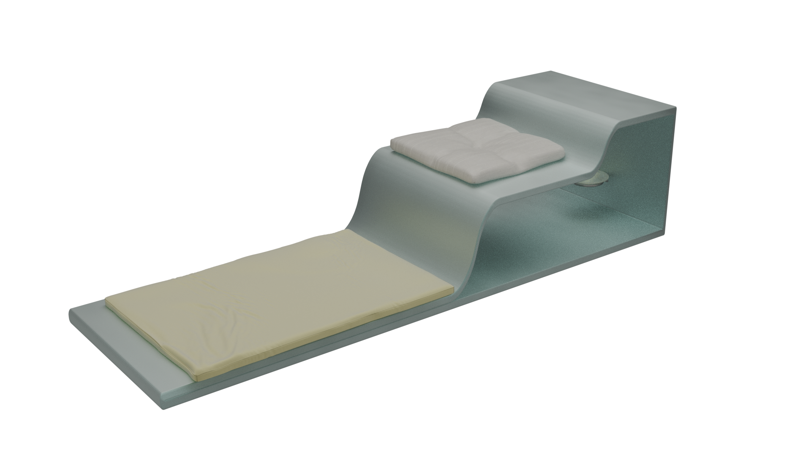
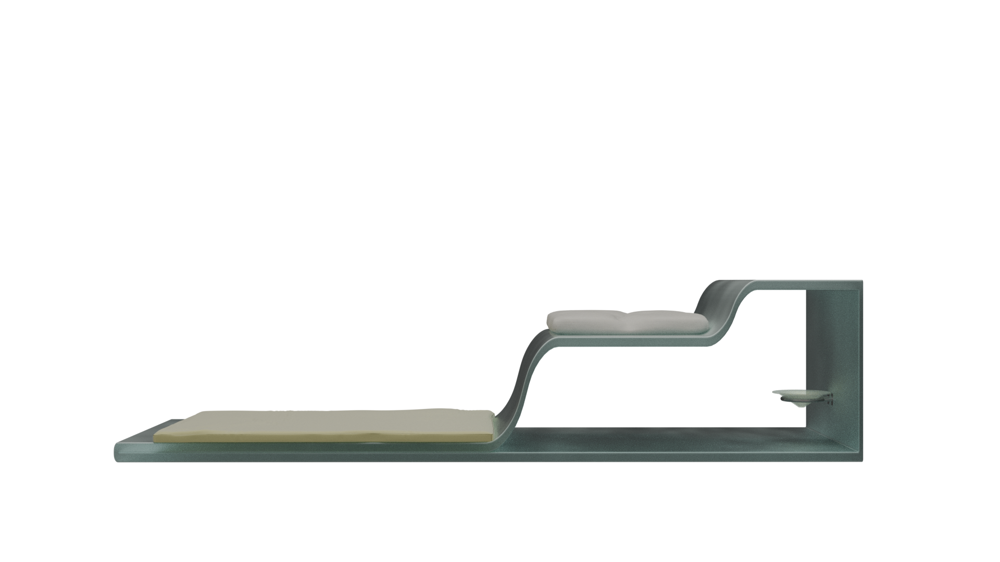

FROM THE PET'S PERSPECTIVE
Intro
This project rethinks veterinary care from the point of view of the animal. Instead of centering only human efficiency, it uses service design, spatial sequence, and atmosphere to create a calmer, more transparent pets healthcare experience.
Deliverables:
Service Design
Spatial Design
Pets Healthcare
Furniture Design
3D Visualization
Year / 2025
Project / From the Pet's Perspective
Type / Academic



See also